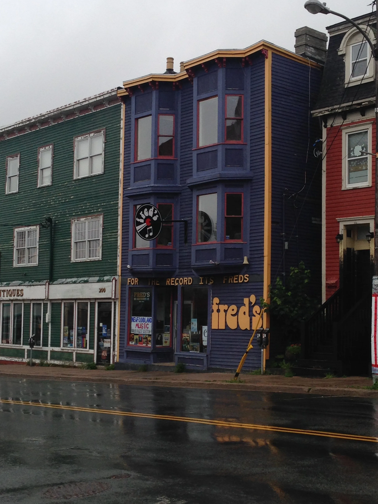
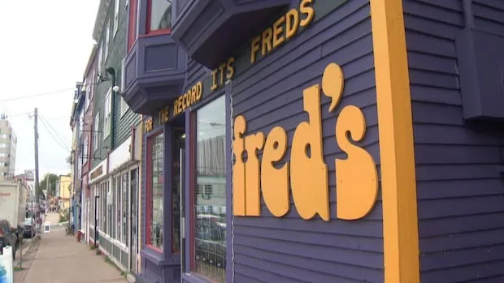
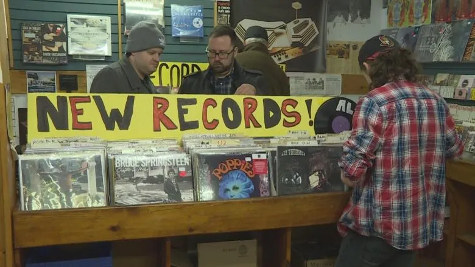
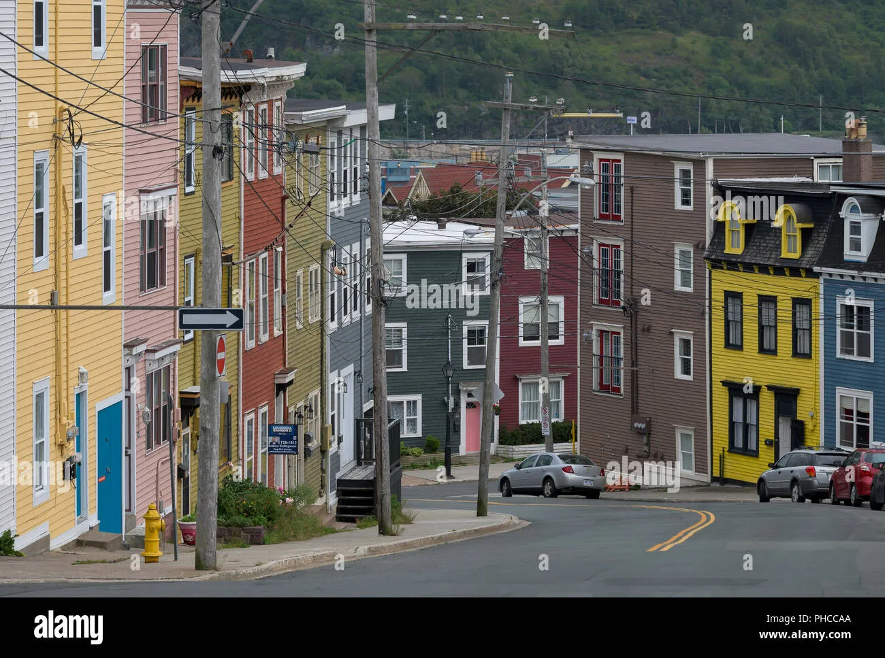

198 Duckworth Street. St. John's, NL
"A Positive Force of Nature"
The story of Fred Brokenshire, a 19-year-old kid who opened a record shop on the oldest commercial street in North America. He built an institution that outlasted every chain, every format war, and every algorithm. From Duckworth Street to wherever The Rock's people landed, this is the store they carry with them.




54 Years on The Rock
A chronological history of Fred's Records. From 1972 to present day, tracing the growth of the shop from a small room to the epicenter of music distribution in Atlantic Canada.
The Full Life
Fred Beyond the Counter
The record store was just one piece. Fred Brokenshire lived with the kind of intensity that made everyone around him feel like they were moving in slow motion.
Crossed the Atlantic in a 36-foot sailboat. Survived a hurricane in the open ocean. Friends said he sailed the way he ran his business: head-on, full speed, and absolutely refusing to turn back.
In 1996, Fred opened Django's restaurant right on Duckworth Street. Live music, good food, same philosophy. Named after Django Reinhardt. It became one of the most talked-about spots in St. John's before closing its doors.
Fred assembled a significant collection of Newfoundland art. Works by Christopher Pratt, Mary Pratt, and David Blackwood hung in his home. Curation was not something he reserved for vinyl.
Produced and presented "Going Solo" on CBC Radio from 1985–86. 17 episodes of acoustic sessions, archived at Memorial University. Fred put the microphone in front of artists nobody else was recording.
The Crew
The People of Fred's
Tony was asked to stick around till Christmas in 1984. He never left. Over 40 years later, he is the longest-serving employee in the store's history. He grades every used record to Goldmine standards, writes the handwritten blurbs that sit on the shelf beside each staff pick, and keeps the shop running six days a week.
Customers have mistaken him for Fred so many times that the staff stopped correcting them. Fred was 6'4" and, in his son's words, "this giant, gorgeous man." Tony is neither of these things. But he is the heartbeat of the store, and he has been for four decades.
"A lot of people think he is Fred. He's not. But at this point, he's earned it."
- Murray BrokenshireThe Back Room
Where Careers Started
The back room of 198 Duckworth Street was not just storage. It was a discovery engine. More careers launched out of that room than any label office in Atlantic Canada.
Con O'Brien bought the house on Prospect Street behind the store specifically so he could walk out his back door directly into Fred's. That is how close the relationship was. Fred managed the Irish Descendants from the back room, helping them sell over half a million records and reach mainstream radio across Canada.
Damhnait was stocking shelves and singing in the back room when Fred heard her. He signed her through Duckworth Distribution and helped launch a career that would take her from Duckworth Street to Toronto's music scene. She was one of the first artists Fred championed before anyone else was paying attention.
The list of artists Fred discovered, managed, or championed reads like the roster of Newfoundland music. Great Big Sea played their earliest shows in the store. Kim Stockwood and Alan Doyle were part of the generation of talent that came up through Fred's network. The store was the launchpad. Fred was the fuel.
How We Do Business
Live Music at 198 Duckworth
In-Store Sessions
We still host the best intimate performances in St. John's. 50 people, no stage, just music in the aisles between the bins. Artists who played here early in their careers: The Irish Descendants, Hey Rosetta!, Damhnait Doyle, and The Once.
"Space is limited to 50 people. We text the list 24 hours before we tell anyone else. If you're on it, you're in."
- Tony Ploughman, Store ManagerBe the first to know about upcoming in-store sessions, new drops, and exclusive offers. No spam. Just music.
2,400+ locals on the list. Unsubscribe anytime.
Fred Brokenshire · 1952 – 2021
The Music Never Stopped.
Fred built this store from nothing at age 19. He saw Newfoundland through the rise and fall of vinyl, the CD revolution, the digital era, and the vinyl renaissance — never closing a single day. Even in his final years, when words grew difficult, music remained. Fred could still sing. Some songs never leave you.
"The music mattered until the very end. It always does, for the people who loved it most."
Fred's Records continues as a tribute to that belief — that recorded music isn't just entertainment. It's a way of holding onto time. Of being present with people you love. Of keeping something alive that nothing else can.
The Family · Next Chapter
Fred's Kids Are Running This Now.
Fred passed the store to his three children. Each brings something that the other can't replace. Together, they're the next chapter of 54 years of work.
Graphic designer, musician, and entrepreneur. Designed the Kitty Vitty Brewery label. Drumming for 20 years. He sees Fred's as a platform — and he's building it like one.
Architectural photographer whose work has appeared in Times Square and for Verifin. When Jane shoots Fred's, it looks as good as it feels. Because it's her inheritance too.
Twelve years behind the counter. Knows every supplier, every bin, every regular. Fred's didn't skip a beat when Fred Sr. passed because Freddie Jr. knew every note by heart.
Visit the Shop
Come Dig the Bins
Nothing beats the real thing. Walk through the exact door Fred opened in 1972. Flip through the vintage bins. Ask Tony what arrived this week. Pay attention to the creaky wooden floors and the sound of a needle dropping on an analog pressing.
